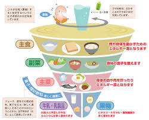
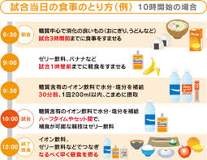

食育
1.栄養素について
栄養素解説

解説
栄養素には、3大栄養素と呼ばれる糖質・脂質・たんぱく質とそれにビタミン・ミネラルを加えて5大栄養素と呼ばれるものがあります。 3大栄養素はカラダを動かすエネルギー源となりますが、スポーツをするにあたって5大栄養素それぞれに役割があり、どれも欠かせないものなので、これらの栄養素をバランス良く摂ることが大切です。 栄養素は、基本的には「カラダを動かすエネルギーとなるもの」「カラダを作るもの」「カラダの調子を整えるもの」の3つに分けられます。 前述したように、3大栄養素はエネルギー源になりますが、中でもたんぱく質は、筋肉や爪・髪・内臓・血液・骨などを作る働きもあります。アスリートにとっては最もカギとなる栄養素と言えます。
2.食事について
運動前の食事

解説
経験したことがある人も多いと思いますが、満腹状態で運動してしまうと、消化不良で腹痛などの原因になります。食事後すぐに運動するのは避けましょう。 ランニングやサイクリングなどの激しい運動をするときには、空腹のままだと運動中のエネルギー循環や、筋肉の回復をスムーズにいかなくなることがあります。また、最低限の糖分を摂取しなければ、貧血になるおそれも。 運動する30分前は栄養価が高く消化吸収のよい果物や、ジュースなどがおすすめです。固形物は、運動までに消化が間に合わないので避けましょう。 特におすすめなのは「バナナ」。バナナに含まれるカリウムには、筋肉の働きを調整する作用があります。（※1）朝食前に運動する人は、バナナを1本食べてからすることで、筋肉の強化と回復によい効果が期待できるでしょう。